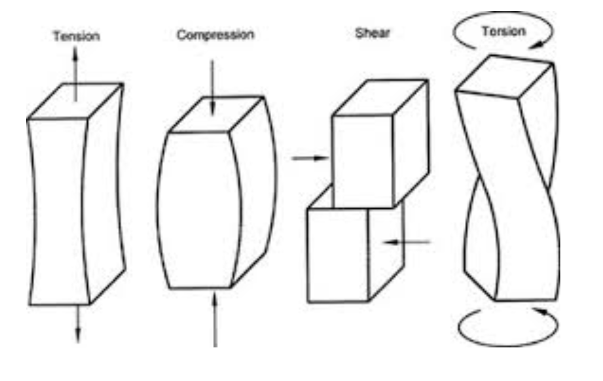
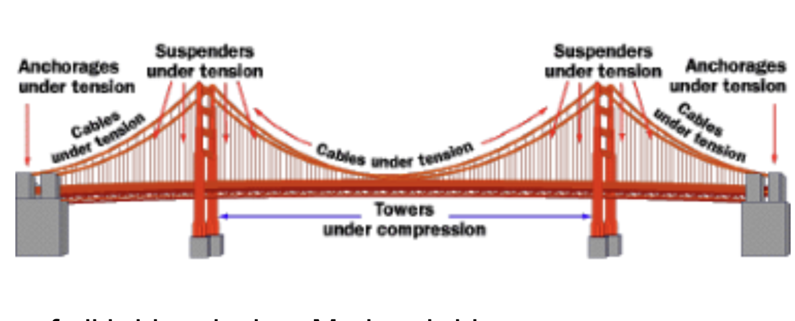
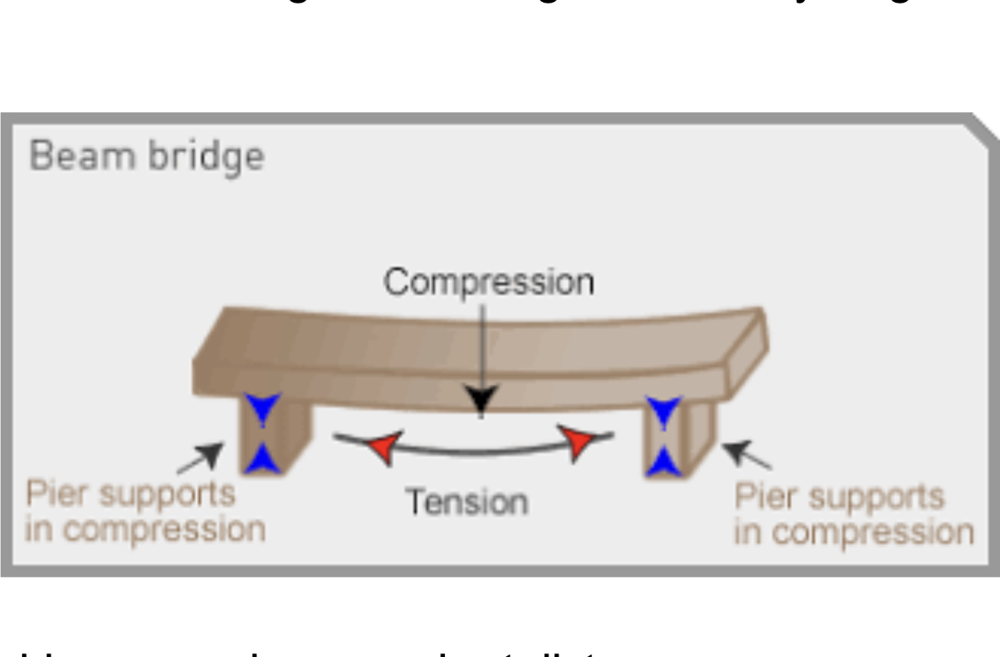
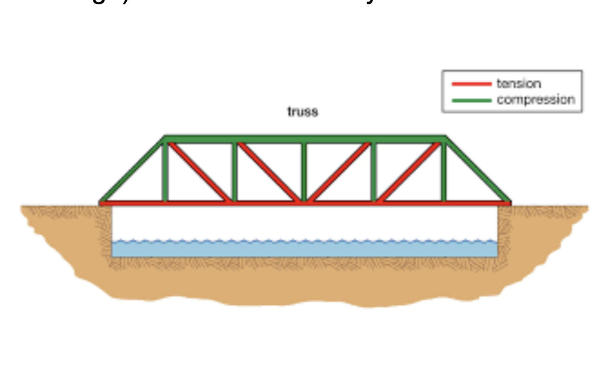

Engineering • Physics
Why bridges do not collapse
A bridge's job is to provide a safe way for pedestrians or vehicles to cross physical objects like water, valleys or roads. They connect different communities and allow for faster transport of goods around the world. Who hasn’t used a bridge? Whether it is walking, cycling or driving, at some point in your life you will have used a bridge. Busy bridges, like the George Washington Bridge, New York City can have up to 300,000 vehicles crossing them per day. Our dependency on bridges makes it essential to understand the forces that act on bridges, how they are held up and how best to support them. Thousands of lives are a risk at any moment on a bridge.

A bridge must resist four main forces. These come from the bridge’s weight, the weight of people and vehicles on the bridge and external factors such as wind and earthquakes. The forces created are compression (push together), tension (pulls apart) , shear (layers sliding past each other) and torsion (twisting force).

When building a bridge, engineers have to ensure that there is no singular point where the forces become overloaded. Careful rerouting of the forces is called load distribution and is the foundation of all bridge design. Modern bridges are designed with many paths so even if one route becomes damaged or unable to withstand the force the bridge doesn’t collapse. This allows bridges to survive even when part of the bridge breaks off or becomes damaged. .
Materials are chosen due to their ability to withstand forces. Steel is strong in tension meaning that it is hard to stretch, concrete is strong in compression therefore difficult to compress. Reinforced concrete (steel beams surrounded by concrete) is used as it combines the properties of the 2 materials. This can also help to resist deterioration and increase the lifespan and overall safety of the bridge.
There are 4 main types of bridges that each have their own way of transferring loads. The first is an ‘Arch Bridge’ like the Sydney Harbour Bridge. This converts vertical loads from the weight of the bridge and people on it into compressive forces that travel down the curve of the bridge into the ground.
A Suspension Bridge, like the Golden Gate Bridge, uses cables between towers to take tension forces while the towers take compressive forces allowing for the bridges to be very long .

Beam bridges are simple short bridges which transfer load directly into supports below it. It can only be shortspaned because beam bridges don’t have a clear geometric shape. Forces like compression and tension cause the beam bridge to start to bend when it becomes too long meaning the bridge can only cover short distances.
Cable-stayed bridges like the Abraham Lincoln bridge. have cables which connect towers directly to the deck (where the road lies). Tension is in the cables and compression in the towers. As the bridge is symmetrical the forces in the cables cancel out so the bridge remains stable. The supports are able to support the compressive load of the bridge's weight.

Research into steel bridges has identified ways for a bridge to resist collapse even after the critical member (the most crucial component of a bridge) fails. This is done by redistribution of forces and elastic deformation (reversible change in the shape of the material after a force). These can absorb energy and provide alternate paths for load to flow through. This can be seen in systems like a truss. Trusses are made of interconnected triangles, when one breaks surrounding triangles immediately take on more load. Suspension or Cable-stayed bridges use thousands of wires to create cables so if one breaks then the load can still be carried as it is redistributed across remaining wires.
Bridges don’t collapse because they are designed to be able to move. Temperature changes cause expansion or contraction, wind creates oscillation, traffic causes dynamic loads and in extreme conditions, earthquakes cause movement. By having expansion joints and dampeners the movement of bridges can be controlled preventing the build up of stress which can cause failure.By allowing for movement through bearings (rollers that let the bridge slide above it) and expansion joints (gaps in the deck that open and close as the bridge expands and contracts) the bridge is prevented from being rigid and there isn’t a build up of stress that could cause a collapse.
Despite the ability to allow movement, bridges are designed not to shake side to side or up and down as this can result in a resonance frequency being met. One of the most important concepts in building bridges and preventing collapse is the idea of a resonance frequency. Every structure has a natural frequency that it vibrates at, much like how a guitar string will vibrate at a particular pitch due to the tension in the string. This is called the resonance frequency of the structure. If external forces on the bridge such as wind or pedestrians walking in sync match this frequency the vibrations will grow larger in a phenomenon called renaissance, making the bridge more likely to fall and collapse. To counteract this engineers have to carefully calculate the resonance frequency and add design features like tuned mass dampeners. These eare structural devices composed of a spring and mass which absorbs and dissipates energy to reduce vibrations, it is tuned to match the resonance frequency. This reduces energy in the system allowing the bridge to vibrate less and prevent collapse. Many people will have heard of the Millennium bridge in London which was closed after just 2 days due to the bridge vibrating from side to side up to 7.5cm. This was caused by the resonance frequency of the bridge being 1Hz. This closely matched the natural walking pace of 2 steps per second meaning that the body vibrates back and forth once per second. One would expect not everyone's steps to be in sync, however as the bridge started to move, up to 20% more people walked in sync with the bridge vibrations and so caused the bridge to move more. After the closure of the bridge and re-assessment of the structure, 37 linear viscous dampers ( tanks with a viscous liquid in that a piston moves through ) and 50 mass tuned dampers were added to reduce vibrations and their frequency so they did not match any resonance frequencies from people walking on the bridge.
Bridges may seem like simple structures that we cross without thought, but they are a result of careful engineering and constant monitoring. The materials used, the structure, and the redirection of forces all work together to carry enormous loads. Engineers have carefully designed bridges to move safely with temperature changes, winds, earthquakes and importantly avoiding resonance frequencies.